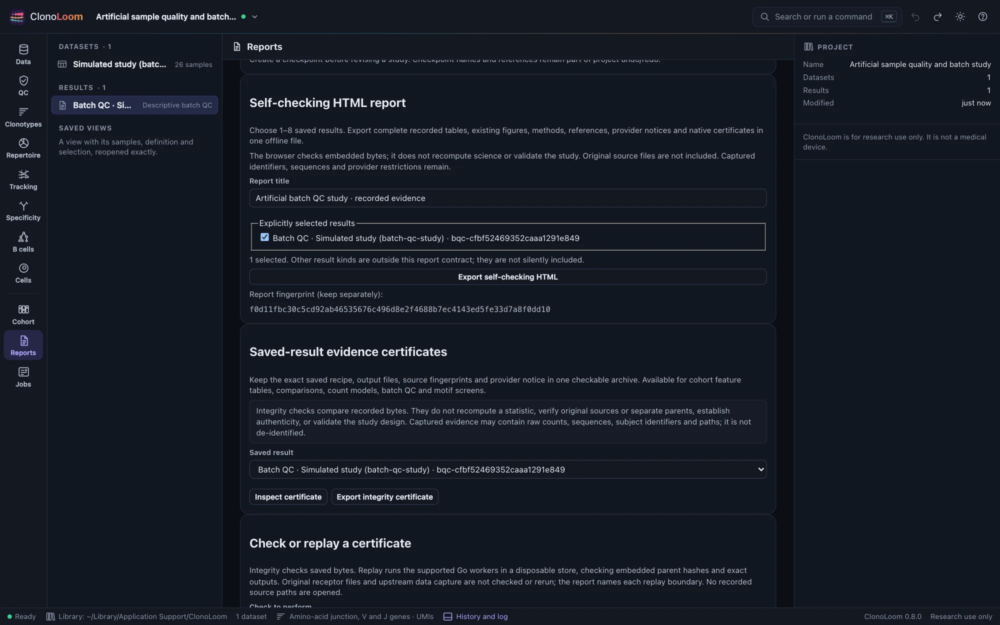
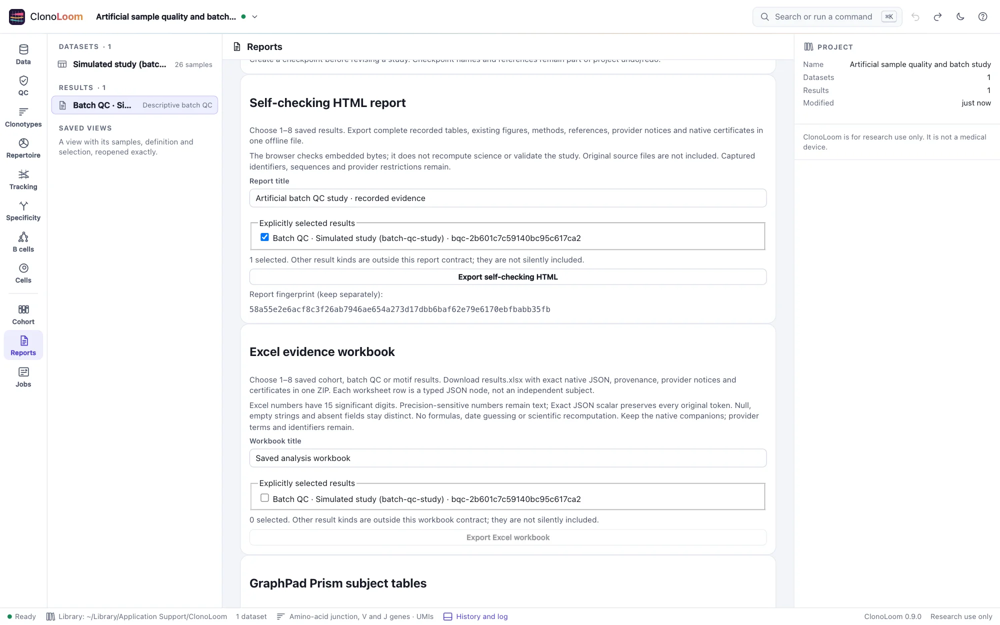
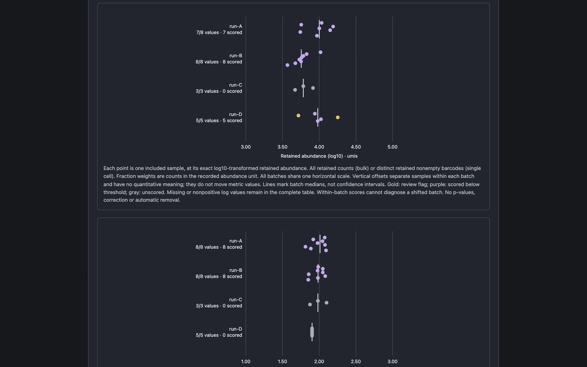
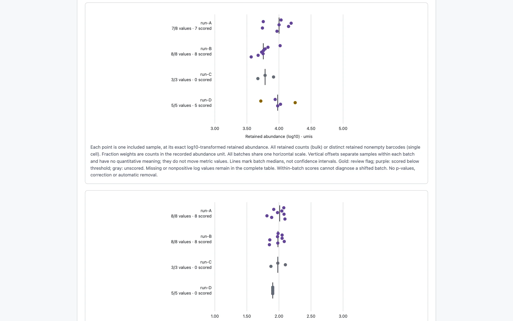
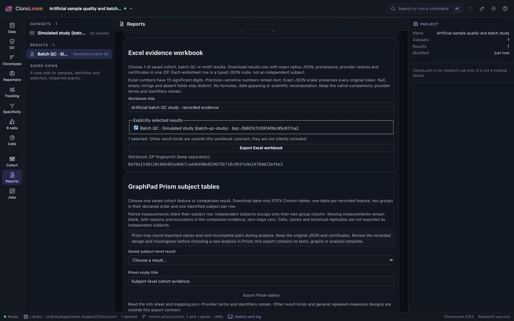
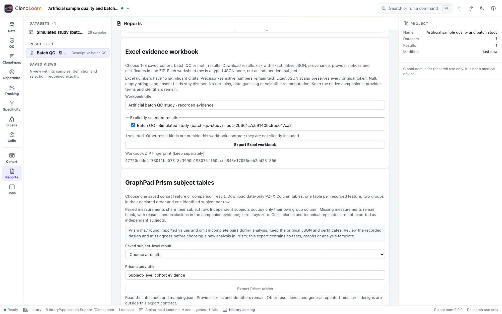
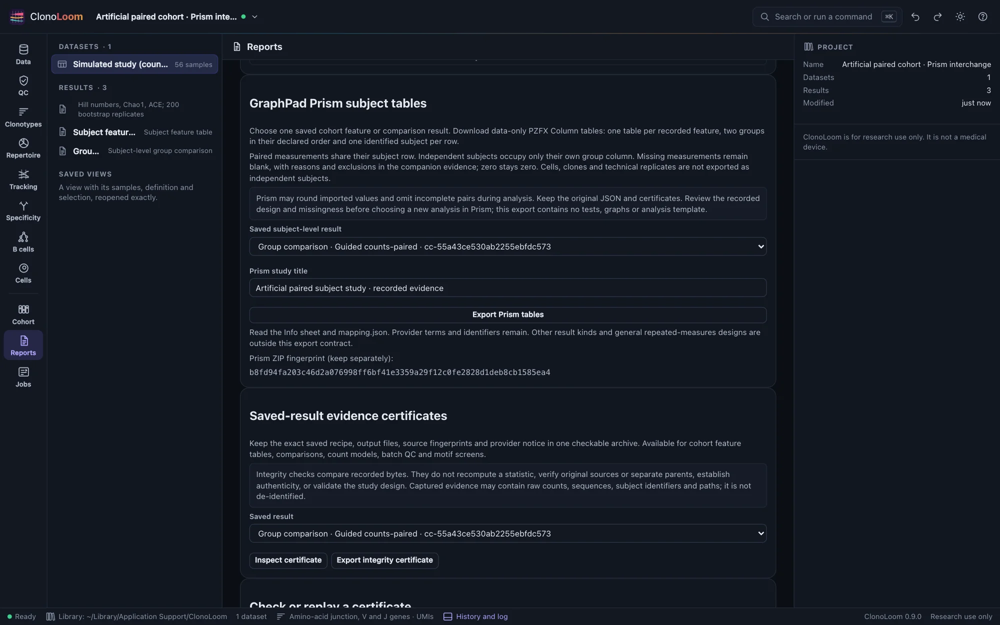
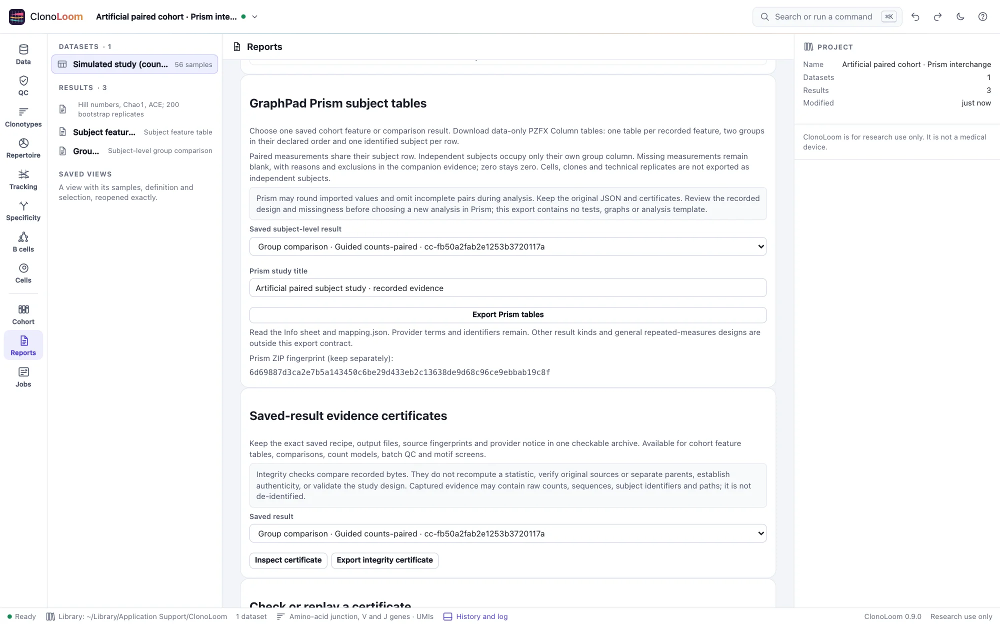

Self-checking HTML reports
Keep the results, their methods and their original evidence together, with a clear distinction between checking bytes and rerunning science.
Available since ClonoLoom 0.8.0. Export self-checking reports from the supported saved results.
Choose the saved results
Open Reports → Self-checking HTML report, enter a title and select one to eight results. Cohort features, comparisons, replicated count models, batch QC and motif screens are supported within the documented size bounds. Selection starts empty; other results are not silently included.


Choose Export self-checking HTML. The file carries original result JSON, native certificates, complete tables, recorded methods, references and provider notices. Restricted evidence requires acknowledgment of all selected results’ terms and remains for private study under those terms.
Open and check offline
Open the downloaded HTML in a modern browser with JavaScript enabled. It needs no application server, network or source files. The checker verifies exact embedded content, downloads, figure geometry code and styles before displaying the report. Optionally enter the independently retained report fingerprint and check again. Failed checks hide the report and downloads; disabled JavaScript never shows a successful verdict.
Integrity match does not mean recomputed. Download a native certificate at the end and use its supplied clonoloom verify --replay --expect … command for a separate scientific replay. Existing captured-input and method limits still apply.
Read complete evidence
Tables preserve exact saved numeric tokens, every result row, missing values, exclusions, denominators and testing families. Expand their sections to read nested evidence. The full original manifest and captured recipe remain in the certificate; the visible provenance table avoids duplicating large input matrices.


Reports reuse the existing cohort observation/effect plots, count-model overview and all batch-QC metrics. Feature and motif results are tables-only. Plot ticks may be rounded for readability; the tables and downloaded JSON retain exact values. Unsupported or oversized geometry is labeled unavailable rather than replaced with a selected subset.
Keep the limits visible
Checksums do not establish authorship, sound study design, calibrated inference, causality or biological truth. Someone able to replace the checker, contents and hashes can forge a consistent page. An independently retained fingerprint needs a trusted checker. Original sources and separate parent files are outside the report; native replay does not independently repeat upstream source capture.
Batch flags remain descriptive. Count models describe relative repertoire abundance with their recorded assumptions. Motif screens remain the documented GLIPH2-style adaptation, without proving antigen specificity. Captured identifiers, sequences and paths are not de-identified, and provider rights are unchanged.
Reports have explicit file, content and table bounds. Oversized selections fail rather than drop rows; large motif screens may need their ordinary certificate exports. See the complete report contract, bounds and API.
Excel evidence workbooks · ClonoLoom 0.9.0
In ClonoLoom 0.9.0, open Reports → Excel evidence workbook and explicitly select one to eight saved cohort, batch QC or motif results. The ZIP contains an XLSX, original result and full manifest JSON, provider notices, native certificates and an inventory of hashes. Restricted evidence still needs acknowledgment of its terms.


Each result and provenance sheet indexes complete typed JSON nodes. A worksheet row is not an independent subject. Original scalar tokens remain text; strings, null, absent fields, empty values and zero stay distinct. Precision-sensitive numbers stay text because Excel numeric cells have limited precision. There are no new formulas, analyses or plots.
Keep the original ZIP: editing or re-saving in another spreadsheet application can change representations. Large selections fail explicitly rather than omit evidence. Read the workbook scope, precision policy, scientific limits and validation before using the numeric presentation for further work.
Prism subject tables · ClonoLoom 0.9.0
Open Reports → GraphPad Prism subject tables and explicitly choose a saved cohort feature or comparison result. Each recorded feature becomes a data-only Column table with the declared reference/comparison order and one identified subject per row. Paired measurements share a subject row; independent subjects occupy only their own group column.


Missing measurements stay blank with their reasons in the companion mapping. Structural blanks, zero and excluded samples retain distinct meanings. Keep the original JSON, full provenance, source notices and native certificate. Provider acknowledgment remains explicit.
Choose paired or independent analysis deliberately in Prism. Import can round values, and a paired test can omit incomplete pairs even when the saved ClonoLoom feature was left untested. Independent XML and R-reader import checks pass; native Prism GUI import remains unverified on the validation host. Read the supported interchange, import procedure and scientific limits.